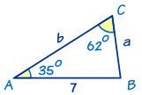
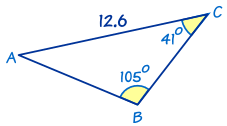

Solving AAS Triangles
"AAS" means "Angle, Angle, Side"
 |
"AAS" is when we know two angles and one side (which is not between the angles). |
To solve an AAS triangle
- use the three angles add to 180° to find the other angle
- then The Law of Sines to find each of the other two sides
Example 1

In this triangle we know:
- angle A = 35°
- angle C = 62°
- and side c = 7
We can first find angle B by using 'angles of a triangle add to 180°':
B = 180° − 35° − 62° = 83°
To find side a we can use The Law of Sines:
a/sin(A) = c/sin(C)
a/sin(35°) = 7/sin(62°)
Multiply both sides by sin(35°):
a = sin(35°) × 7/sin(62°)
a = 4.55 to 2 decimal places
To find side b we can also use The Law of Sines:
b/sin(B) = c/sin(C)
b/sin(83°) = 7/sin(62°)
Multiply both sides by sin(83°):
b = sin(83°) × 7/sin(62°)
b = 7.87 to 2 decimal places
Now we have completely solved the triangle!
We used b/sin(B) = c/sin(C) rather than b/sin(B) = a/sin(A) for the last calculation ... why?
There's a good reason for that. What if we made a mistake when finding a? Then our answer for b would also be wrong!
As a rule, it is always better to use the sides and angles that are given rather than ones we've just worked out.
Example 2

This is also an AAS triangle.
First find angle A by using "angles of a triangle add to 180°":
Now find side c by using The Law of Sines:
Similarly we can find side a by using The Law of Sines and using the given side b = 12.6 (rather than side c that we just worked out):
Done!